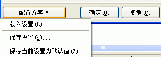

您可以通过在编译设置对话框里按"CHM设置..."按钮, 然后在"CHM设置"对话框里点击按钮 "配置方案"，弹出的菜单项就是配置方案的全部功能, 关于弹出的菜单项的使用请看下面的具体描述.

载入设置...:
从以前保存的配置方案(.SCM文件)加载CHM设置.
保存设置...:
保存当前的CHM设置到一个配置方案(.SCM文件)，以便将来直接使用该CHM设置.
保存当前设置为默认值:
把当前的CHM设置保存为对今后所有新建的工程文件适用的默认值.
如果您点击了这个菜单项,
程序将把当前的 CHM设置保存为对今后所有新建的工程文件适用的默认值，也就是说:今后您新建的工程文件都将使用当前的CHM设置作为它们的默认设置.
如果以后想把CHM设置恢复到程序初始化时的状态,
您只需要删除或重命名"Default.SCM"这个文件即可(这个文件可以在程序目录下的子目录"\Schemes"里找到).
| Copyright © 2000-2007 Guohua Software, inc. All Rights Reserved. |